| Морско дело | МППСМ 72 | Навигация | Нормативна уредба | Техническа подготовка |
| МППСМ-72 ИЗПИТ 17 юни 2012 г. | ||||||
| № | Въпрос | Отговор "а" | Отговор "б" | Отговор "в" | Отговор "г" | |
| 1 | За кои кораби се прилагат MППСМ? | Всички кораби по-големи от 500 GT. | Всички кораби с дължина по-голяма от 20m. | Всички морски кораби в открито море и свързаните с него води. | Всички кораби освен риболовните. | |
| 2 | Кораб "ограничен в способността си да маневрира" е: | Кораб зает с драгажни дейности. | Кораб зает с риболов. | Ветроходен кораб на платна. | Претоварен кораб. | |
| 3 | Кога корабите се считат във видимост един с друг? | Когато се наблюдават чрез РЛС. | Когато поддържат радиотелефонна връзка. | Когато се наблюдават чрез РЛС и поддържат радиотелефонна връзка. | Само тогава, когато може да се наблюдават зрително. | |
| 4 | Изразът "на ход" означава: | Че, корабът не е на котва. | Че, корабът не е на котва, не е завързан за брега и не е заседнал. | Че, корабът не е завързан за брега. | Че, корабът не е заседнал. | |
| 5 | Думата "дължина" на кораба означава: | Теоретичната дължина на кораба. | Конструктивната дължина на кораба. | Дължината между перпендикулярите. | Най-голямата дължина на кораба. | |
| 6 | Опасност от сблъскване съществува: | Когато пеленга към приближаващия кораб се изменя значително. | Когато пеленга към приближаващия кораб не се изменя значително. | Когато приближаващия кораб се намира от левия ни борд. | Когато приближаващия кораб се намира от десния ни борд. | |
| 7 | В теснини или фарватери кои кораби не трябва да затрудняват движението на останалите? | Които са заети с риболов. | Които са с дължина по-малка от 20 метра. | Ветроходните. | Всички изброени в другите отговори. | |
| 8 | В теснини или фарватер два продължителни и два къси звукови сигнала означават: | "Имам намерение да ви изпреваря от левия борд" | "Имам намерение да ви изпреваря от десния борд" | "Изменям своя курс на ляво" | "Изменям своя курс на дясно" | |
| 9 | В теснини или фарватери два продължителни и един къс звукови сигнала означават: | "Имам намерение да ви изпреваря от левия борд" | "Имам намерение да ви изпреваря от десния борд" | "Изменям своя курс на ляво" | "Изменям своя курс на дясно" | |
| 10 | В теснини или фарватери един продължителен, един къс, един продължителен и един къс звукови сигнала означават: | "Имам намерение да ви изпреваря от левия борд" | "Имам намерение да ви изпреваря от десния борд" | "Моите двигатели работят на заден ход" | "Съгласен съм да бъда изпреварен” | |
| 11 | В теснини или фарватери най-малко пет къси и чести звукови или светлинни сигнала означават: | "Имам намерение да ви изпреваря от левия борд" | "Имам намерение да ви изпреваря от десния борд" | "Съмнявам се във вашите намерения и действия" | "Съгласен съм да бъда изпреварен" | |
| 12 | В теснини или фарватери един продължителен звуков сигнал означава: | "Имам намерение да ви изпреваря от левия борд" | "Имам намерение да ви изпреваря от десния борд" | Кораб, който приближава завой и може да не вижда други кораби | "Съгласен съм да бъда изпреварен" | |
| 13 | В теснини или фарватери един продължителен звуков сигнал означава: | Отговор на кораб, който приближава завой и може да не вижда други кораби | "Имам намерение да ви изпреваря от левия борд" | "Имам намерение да ви изпреваря от десния борд" |
"Съгласен съм да бъда изпреварен" | |
| 14 | В теснини или фарватери кои кораби не трябва да затрудняват движението на останалите? | Корабите с механичен двигател на ход. | Корбите ограничени от своето газене. | Корабите заети с риболов. | Корабите ограничени в способността си да маневрират. | |
| 15 | В теснини или фарватери кои кораби не трябва да затрудняват движението на останалите? | Корабите с механичен двигател на ход. | Koрабите с дължина, по-малка от 20м. | Корабите ограничени от своето газене. | Корабите ограничени в способността си да маневрират. | |
| 16 | В теснини или фарватери кои кораби не трябва да затрудняват движението на останалите? | Ветроходните кораби. | Корабите ограничени в способността си да маневрират. | Корабите с механичен двигател на ход. |
Корабите ограничени от своето газене. | |
| 17 | Трябва ли да се избягва заставането на котва в теснина? | Не трябва. | Трябва, ако обстоятелствата на случая позволяват. | Не трябва, ако кораба е ветроходен. | Не трябва, ако кораба е по-малък от 20м. | |
| 18 | Koраб, който използва схема за разделно движение,трябва: | Да не навлиза в крайбрежната зона за движение. | Да не извършва риболовна дейност. | Да се движи в съответния коридор в общоприетата посока. |
Да не пресича разделителната линия. | |
| 19 | Koраб, който използва схема за разделно движение, трябва: | Да не извършва риболовна дейност. | Да не навлиза в крайбрежната зона за движение. | Да се придържа по-далеч от разделителната линия. | Да не пресича разделителната линия. | |
| 20 | До схемата за разделно движение, кои кораби могат да използват крайбрежната зона? | Кораби с дължина по-малка от 20м. | Корабите ограничени в способността си да маневрират. | Корабите ограничени от своето газене. | Всички кораби. | |
| 21 | До схемата за разделно движение, кои кораби могат да използват крайбрежната зона? | Корабите ограничени от своето газене. | Ветроходните. | Всички кораби. | Корабите ограничени в способността си да маневрират. | |
| 22 | До схемата за разделно движение, кои кораби могат да използват крайбрежната зона? | Корабите ограничени от своето газене. | Всички кораби. | Корабите ограничени в способността си да маневрират. | Корабите заети с риболов. | |
| 23 | До схемата за разделно движение, кои кораби могат да използват крайбрежната зона? | Всички кораби. | Кораби, които са на път за или от пристанище. | Корабите ограничени от своето газене. | Корабите ограничени в способността си да маневрират. | |
| 24 | Кои кораби могат да навлизат в разделителната зона на схема за разделно движение? | Корабите заети с риболов. | Военните кораби. | Всички кораби. | Хидросамолетите | |
| 25 | Кои кораби могат да навлизат в разделителната зона на схема за разделно движение? | Военните кораби. | Корабите, които избягват непосредствена опастност. | Хидросамолетите. | Всички кораби | |
| 26 | В схема за разделно движение, кои кораби не трябва да затрудняват преминаването на другите? | Корабите ограничени от своето газене | Корабите ограничени в способността си да маневрират. | Корабите с механичен двигател на ход. | Корабите заети с риболов. | |
| 27 | В схема за разделно движение, кои кораби не трябва да затрудняват преминаването на koрабите с механичен двигател? | Кораби с дължина по-малка от 20м. | Корабите ограничени от своето газене. | Корабите ограничени в способността си да маневрират. | Корабите заети с водолазна деиност. | |
| 28 | В схема за разделно движение, кои кораби не трябва да затрудняват преминаването на koрабите с механичен двигател? | Корабите ограничени от своето газене. | Корабите ограничени в способността си да маневрират. | Корабите заети с водолазна деиност. | Ветроходните кораби. | |
| 29 | Кораб, който не използва схемата за разделно движение, трябва: | Да се държи на възможно по-голямо разстояние от нея | Да се движи успоредно на нея. | Да не я пресича. | Да я заобиколи. | |
| 30 | Трябва ли да се избягва заставането на котва в схема за разделно движение? | Не трябва. | Трябва, доколкото това е практически възможно. | Не трябва, ако кораба е ветроходен. | Не трябва, ако кораба е по-малък от 20м. | |
| 31 | Трябва ли да се избягва пресичане на коридорите на схема за разделно движение? | Не трябва, ако кораба е ветроходен. | Не трябва. | Да, но ако кораба е принуден, това да става под прав ъгъл. | Не трябва, ако кораба е по-малък от 20м. | |
| 32 | Ветроходни кораби се сближават, кой на кого отстъпва път? | Корабът, с ляв галс, на корабът с десен галс. | Корабът, с десен галс, на корабът с ляв галс. | Корабът, който вижда другия от левия си борд, на виждания. |
Корабът, който вижда другия от десния си борд, на виждания. | |
| 33 | Ветроходни кораби се сближават, кой на кого отстъпва път? | Koрабът, от подветрената, на корабът от наветрената. | Корабът, който вижда другия от левия си борд, на виждания. | Корабът, от наветрената страна, на подветрения. | Корабът, който вижда другия от десния си борд, на виждания. | |
| 34 | На ветроходен кораб, коя страна се счита наветрена? | Страната, на която сочи главното платно. | Страната, противоположна на тази, на която се намира главното платно. | Страната, от която духа вятъра | Страната, на която е накренен кораба. | |
| 35 | Всеки кораб, които изпреварва друг е длъжен: | Да го изпревари от левия борд. | Да се свърже по радиотелефонна връзка с изпреварвания. | Да се държи встрани от пътя на изпреварвания кораб. | Да информира изпреварвания кораб. | |
| 36 | Кога корабът се счита за изпреварващ? | Когато вижда само кърмовата светлина на изпреварвания кораб. | Когато вижда една бордова и една топова светлина на изпреварвания кораб. | Когато вижда изпреварвания кораб пред траверса си. | Когато се движи с по-голяма скорост от изпреварвания кораб. | |
| 37 | Когато корабът се съмнява дали се явява изпреварващ, е длъжен: | Да не предприема изпреварване. | Да намали скоростта си. | Да промени курса си. | Да се счита, че това е така и да действа по съответния начин. | |
| 38 | Два кораба с мех.двигатели се сближават на противоположни курсове, има опасност от сблъскване, всеки от тях е длъжен: | Да намали скороста си. | Да измени курса си на ляво за разминаване с десни бордове. | Да измени курса си на дясно за разминаване с леви бордове. | Да осъществи УКВ връзка с насрещния кораб. | |
| 39 | Два кораба с механични двигатели се движат на пресичащи се курсове, има опасност от сблъскване. Кой отстъпва път? | Който вижда другия от левия си борд. | Който вижда другия от десния си борд. | Който може да пресече курса на другия. | Който не може да пресече курса на другия. | |
| 40 | Кораб, който отстъпва път, трябва: | Да предприеме решителни действия, за да се размине чисто с другия кораб. | Да намали скоростта си. | Да осъществи УКВ връзка с насрещния кораб. | Да измени курса си на ляво за разминаване с десни бордове. | |
| 41 | Кораб, на който се отстъпва път е длъжен: | Да измени курса си на ляво за разминаване с десни бордове. | Да намали скоростта си. | Да осъществи УКВ връзка с насрещния кораб. | Да не променя курса и скоростта си. | |
| 42 | Кораб, зает с риболов трябва да отстъпи път на: | Кораб, с механичен двигател на ход. | Ветроходен кораб. | Хидросамолет, когато е на вода. | Кораб, ограничен в способността си да маневрира. | |
| 43 | Кораб, зает с риболов трябва да отстъпи път на: | Кораб без управление. | Кораб, с механичен двигател на ход. | Ветроходен кораб. | Хидросамолет, когато е на вода. | |
| 44 | Кораб, зает с риболов трябва да отстъпи път на: | Кораб, с механичен двигател на ход. | Хидросамолет, когато е на вода. | Кораб ограничен от своето газене. |
Ветроходен кораб. | |
| 45 | Кораб, ограничен в способността си да маневрира, трябва да отстъпи път на: | Кораб, с механичен двигател на ход. | Кораб без управление. | Кораб, ограничен от своето газене. |
Ветроходен кораб. | |
| 46 | Ветроходен кораб на ход, трябва да отстъпи път на: | Кораб без управление. | Хидросамолет, когато е на вода. | Кораб на въздушна възглавница. | Кораб, с механичен двигател на ход. | |
| 47 | Ветроходен кораб на ход, трябва да отстъпи път на: | Хидросамолет, когато е на вода. | Кораб на въздушна възглавница. | Кораб, с механичен двигател на ход. | Кораб ограничен от своето газене. | |
| 48 | Ветроходен кораб на ход, трябва да отстъпи път на: | Кораб на въздушна възглавница. | Кораб, ограничен в способността си да маневрира. | Кораб, с механичен двигател на ход. | Хидросамолет, когато е на вода. | |
| 49 | Ветроходен кораб на ход, трябва да отстъпи път на: | Кораб, с механичен двигател на ход. | Хидросамолет, когато е на вода. | Кораб, зает с риболов. | Кораб на въздушна възглавница | |
| 50 | Кораб ограничен от своето газене, трябва да отстъпи път на: | Кораб без управление. | Ветроходен кораб. | Хидросамолет, когато е на вода. | Кораб, зает с риболов. | |
| 51 | Кораб ограничен от своето газене, трябва да отстъпи път на: | Хидросамолет, когато е на вода. | Кораб, зает с риболов. | Кораб, ограничен в способността си да маневрира. | Ветроходен кораб. | |
| 52 | Кораб, с механичен двигател на ход, трябва да отстъпи път на: | Пилотски кораб. | Кораб на въздушна възглавница. | Хидросамолет, когато е на вода. | Кораб без управление. | |
| 53 | Кораб, с механичен двигател на ход, трябва да отстъпи път на: | Кораб на въздушна възглавница. | Хидросамолет, когато е на вода. | Кораб, ограничен в способността си да маневрира. | Пилотски кораб. | |
| 54 | Кораб, с механичен двигател на ход, трябва да отстъпи път на: | Кораб, зает с риболов. | Пилотски кораб. | Кораб на въздушна възглавница | Хидросамолет, когато е на вода. | |
| 55 | Кораб, с механичен двигател на ход, трябва да отстъпи път на: | Хидросамолет, когато е на вода. | Ветроходен кораб. | Кораб на въздушна възглавница. | Пилотски кораб. | |
| 56 | При плаване в ограничена видимост, за кои кораби се отнасят МППСМ? | Които не са във видимост един с друг. | Които са във видимост един с друг. | Които са с дължина по-малка от 12 метра. | Които са с дължина по-малка от 7 метра. | |
| 57 | При плаване в ограничена видимост, всеки кораб трябва: | Да не изпреварва другия кораб. | Да не изменя курса си на ляво. | Да не изменя курса си на дясно. | Да се движи с безопасна скорост. | |
| 58 | При плаване в ограничена видимост, всеки кораб с механичен двигател трябва: | Да се движи на най-малък ход. | Да не изменя курса си на ляво. | Да държи машините си готови за незабавна маневра. | Да не изменя курса си на дясно. | |
| 59 | При ограничена видимост, откривате кораб само с радиолокатор, трябва:. | Да определи дали се създава ситуция на прекомерно сближение. | Да намали хода си до минимум. | Да влезе във връзка с другия кораб. | Да не изменя курса си на ляво. | |
| 60 | При ограничена видимост, откривате кораб само с радиолокатор, трябва:. | Да намали хода си до минимум. | Да определи дали съществува опастност от сблъскване. | Да не изменя курса си на ляво. | Да влезе във връзка с другия кораб. | |
| 61 | При ограничена видимост, откривате кораб само с радио-локатор, има опасност от сблъскване, трябва да се избягва: | Изменението на скоростта. | Изменението на курса. | Изменение на курса на дясно ако другия се намира пред траверса и не е изпреварван. | Изменение на курса на ляво, ако другия се намира пред траверса и не е изпреварван. | |
| 62 | При ограничена видимост, откривате кораб само с радио-локатор, има опасност от сблъскване, трябва да се избягва: | Изменение на курса на дясно ако другия се намира пред траверса и не е изпреварван | Изменението на скоростта. | Изменение на курса към страната на кораб, който се намира зад или на траверса ни. |
Изменението на курса. | |
| 63 | При ограничена видимост, чувате пред траверса си сигнал за мъгла от друг кораб, трябва: | Да намалите скоростта на кораба до минималната, за да поддържате курса си. | Да промените курса си на дясно. | Да промените курса си на ляво. | Да извършите поворот. | |
| 64 | При ограничена видимост, чувате пред траверса си сигнал за мъгла от друг кораб, трябва: | Да извършите поворот. | Да промените курса си на ляво. | Да се движите с голяма предпазливост, и ако е необходимо, да спрете движението си. | Да промените курса си на дясно. | |
| 65 | При какви метеорологични условия корабите показват светлини и знаци? | При силно вълнение и видимост, под 1 м.миля. | При видимост над 2 м.мили. | При видимост под 2 м.мили. | При всякакви. | |
| 66 | Светлините на корабите се показват: | От изгрева до залеза на Слънцето. | От залеза до изгрева на Слънцето. | От 08.00 часа до 20.00 часа на съответния часови пояс. | От 20.00 часа до 08.00 часа на съответния часови пояс. | |
| 67 | Светлините на корабите се показват: | От изгрева до залеза на Слънцето, в условията на ограничена видимост. | От изгрева до залеза на Слънцето. | От 20.00 часа до 08.00 часа на съответния часови пояс. | От 08.00 часа до 20.00 часа на съответния часови пояс | |
| 68 | Светлините на корабите се показват: | При всички обстоятелства, когато се счете за необходимо. | От 20.00 часа до 08.00 часа на съответния часови пояс. | От 08.00 часа до 20.00 часа на съответния часови пояс | От изгрева до залеза на Слънцето. | |
| 69 | Правилата относно знаците трябва да се изпълняват през: | Деня. | Деня и нощта. | От 20.00 часа до 08.00 часа на съответния часови пояс. | От 20.00 часа до 08.00 часа на съответния часови пояс. | |
| 70 | Какъв е цвета на топовата светлина? | Зелен. | Бял. | Жълт. | Червен. | |
| 71 | Какъв сектор от хоризонта осветява топовата светлина на кораба? | 180 градуса. | 360 градуса. | 112.5 градуса. | 225 градуса. | |
| 72 | Какви цветове показват бордовите светлини? | Зелен на десния борд и червен на левия. | Червен на десния борд и зелен на левия. | Зелен и на двата борда. | Червен и на двата борда. | |
| 73 | Какъв сектор от хоризонта осветява всяка една от бордовите светлини? | 90 градуса. | 180 градуса. | 135 градуса. | 112.5 градуса. | |
| 74 | Какъв цвят показва кърмовата светлина на кораба? | Червен. | Зелен | Бял | Жълт. | |
| 75 | Какъв сектор от хоризонта осветява кърмовата светлина на кораба? | 90 градуса. | 180 градуса. | 135 градуса. | 112.5 градуса. | |
| 76 | Какъв цвят показва светлината за влачене на кораба? | Жълт. | Червен. | Зелен | Бял. | |
| 77 | На какво минимално разстояние трябва да се вижда топовата светлина на кораби с дължина 50 метра или повече? | 3 морски мили. | 6 морски мили. | 2 морски мили. | 5 морски мили. | |
| 78 | На какво минимално разстояние трябва да се вижда бордовата светлина на кораби с дължина 50 метра или повече? | 3 морски мили. | 6 морски мили. | 2 морски мили. | 5 морски мили. | |
| 79 | На какво минимално разстояние трябва да се вижда кърмовата светлина на кораби с дължина 50 метра или повече? | 5 морски мили. | 2 морски мили. | 6 морски мили. | 3 морски мили. | |
| 80 | На какво минимално разстояние трябва да се вижда бяла кръгововидима светлина на кораби с дължина 50 метра или повече? | 5 морски мили. | 3 морски мили. | 2 морски мили. | 6 морски мили | |
| 81 | На какво минимално разстояние трябва да се вижда топовата светлина на кораби с дължина от 20 до 50 метра? | 5 морски мили | 3 морски мили | 2 морски мили | 6 морски мили | |
| 82 | На какво минимално разстояние трябва да се вижда топовата светлина на кораби с дължина от 12 до 20 метра? | 5 морски мили | 3 морски мили | 2 морски мили | 6 морски мили | |
| 83 | На какво минимално разстояние трябва да се вижда бордовата светлина на кораби с дължина от 20 до 50 метра? | 5 морски мили | 3 морски мили | 2 морски мили | 1 морска миля | |
| 84 | На какво минимално разстояние трябва да се вижда кърмовата светлина на кораби с дължина от 20 до 50 метра? | 5 морски мили | 3 морски мили | 1 морска миля | 2 морски мили | |
| 85 | На какво минимално разстояние трябва да се вижда светлината за влачене на кораби с дължина от 20 до 50 метра? | 2 морски мили | 5 морски мили | 3 морски мили | 1 морска миля | |
| 86 | На какво минимално разстояние трябва да се вижда червената кръгововидима светлина на кораби с дължина от 20 до 50 метра? | 5 морски мили | 2 морски мили | 3 морски мили | 1 морска миля | |
| 87 | На какво минимално разстояние трябва да се вижда бордовата светлина на кораби с дължина по-малка от 12 метра? | 5 морски мили | 2 морски мили | 3 морски мили | 1 морска миля | |
| 88 | На какво минимално разстояние трябва да се вижда кърмовата светлина на кораби с дължина по-малка от 12 метра? | 5 морски мили | 2 морски мили | 3 морски мили | 1 морска миля | |
| 89 | На какво минимално разстояние трябва да се вижда зелената кръгововидима светлина на кораби с дължина по-малка от 12 метра? | 5 морски мили | 2 морски мили | 3 морски мили | 1 морска миля | |
| 90 | Кораб с мех. двигател на ход, с дължина по-малка от 50 м. трябва да показва следните светлини: | 1.предна топова. 2.втора топова. 3.бордови. 4.кърмова. |
1.една топова. 2.бордови. 3.кърмова. |
1.една топова. 2.една бяла кръгововидима. 3.бордови. 4.кърмова. |
1.предна топова. 2.втора топова. 3.бордови. |
|
| 91 | 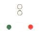
Кой кораб трябва да носи тези светлини? |
Кораб с мех.двигател на ход с дължина по-малка от 50м. | Ветроходен кораб идващ срещу нас. | Кораб с мех.двигател на ход с дължина по-голяма от 50м. | Кораб зает с влачене. | |
| 92 | Кораб с мех. двигател на ход, с дължина по-голяма от 50 м. трябва да показва следните светлини: | 1.предна топова. 2.втора топова. 3.бордови. 4.кърмова. |
1.една топова. 2.бордови. 3.кърмова. |
1.една топова. 2.една бяла кръгововидима. 3.бордови. 4.кърмова. |
1.предна топова. 2.втора топова. 3.бордови. |
|
| 93 | 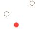
Кой кораб носи тези светлини? |
Кораб с мех.двигател на ход с дължина по-голяма от 50м, движи се на ляво. | Ветроходен кораб идващ срещу нас. | Кораб с мех. двигател на ход с дължина по-малка от 50м. | Кораб зает с влачене. | |
| 94 | Кой кораб носи тези светлини? | Кораб с мех.двигател на ход с дължина по-малка от 50м | Кораб зает с влачене. | Кораб с мех. двигател на ход с дължина по-голяма от 50м, движи се на дясно. | Ветроходен кораб идващ срещу нас. | |
| 95 | Кораб на въздушна възглавница, когато е в неводоизместващо положение, трябва да показва: | Жълта кръгово-видима пробляскваща светлина в допълнение на светлините за кораб с мех. двигател на ход. | Червена кръгововиди ма пробляскваща светлина . | Зелена кръгововидима пробляскваща светлина. | Зелена кръгововидима пробляскваща светлина. | |
| 96 | 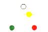 Кой кораб носи тези светлини? |
Ветроходен кораб, идва срещу нас. | Кораб зает с влачене, идва срещу нас. | Кораб на въздушна възглавница, идва срещу нас. | Риболовен кораб, идва срещу нас. | |
| 97 | Кой кораб носи тези светлини? | Кораб на въздушна възглавница, виждаме кърмата | Ветроходен кораб, виждаме кърмата. | Пилотски кораб, виждаме кърмата. | Риболовен кораб, виждаме кърмата. | |
| 98 | 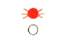 Кой кораб носи тези светлини? |
WIG водолетателен съд, когато излита, каца и лети близо до повърхноста . | Кораб на въздушна възглавница. | Пилотски кораб. | Риболовен кораб. | |
| 99 | WIG водолетателен съд, които излита, каца и лети близо до повърхноста, трябва в допълнение на светлините за кораб с мех. двигател да показва: | Високо интензивна кръгововидима пробляскваща червена светлина. | Високо интензивна кръгововидима пробляскваща зелена светлина. | Високо интензивна кръгововидима пробляскваща жълта светлина. | Високо интензивна кръгововидима пробляскваща бяла светлина. | |
| 100 | 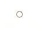 Кой кораб носи тези светлини? |
Кораб на въздушна възглавница. | Пилотски кораб. | Риболовен кораб. | Кораб с мех. двигател на ход, с дължина по-малка от 7 м. и скорост по-малка от 7 възла | |
| 101 | 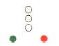 Кой кораб носи тези светлини? |
Кораб, тласкан напред, не е свързан с тласкача твърдо в едно цяло | Кораб, влачен на борд. | Влачен кораб, или частично потопен обект. | Кораб, по дълъг от 50м. влачи друг кораб. | |
| 102 | 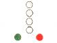 Кой кораб носи тези светлини? |
Кораб, по-дълъг от 50м., влачи друг кораб, дължина на влекалото по-голяма от 200м. | Кораб, по къс от 50м. влачи друг кораб. | Влачен кораб, или частично потопен обект, широк повече от 25м. | Кораб, влачен на борд. | |
| 103 | Кой кораб носи този знак през деня? | Кораб, тласкан напред, не е свързан с тласкача твърдо в едно цяло | Влачен кораб, или частично потопен обект. | Влачещ кораб, дължината на влекалото е повече от 200м. | Влачещ кораб, дължината на влекалото е по-малка от 200м. | |
| 104 | Кой кораб носи тези светлини? | Кораб, по-дълъг от 50м., влачи друг кораб, дължина на влекалото по-голяма от 200м. | Влачен кораб, дължината на влекалото е повече от 200м. | Кораб, по-къс от 50м. влачи друг кораб, движи се надясно. | Кораб, тласкан напред. | |
| 105 | Кой кораб носи тези светлини? | Кораб, по-дълъг от 50м., влачи друг кораб, дължина на влекалото по-голяма от 200м.,движи се на дясно | Кораб, по-къс от 50м. влачи друг кораб, движи се надясно. | Кораб, по-къс от 50м. влачи друг кораб, движи се на ляво. | Влачещ кораб, дължината на влекалото е по-малка от 200м. | |
| 106 | Кой кораб носи тези светлини? | Кораб, по-къс от 50м. влачи друг кораб, движи се на дясно. | Кораб, тласкан напред. | Влачещ кораб, дължината на влекалото е по-голяма от 200м. | Кораб, по-къс от 50м. влачи друг кораб, движи се на ляво. | |
| 107 | Кой кораб носи тези светлини? | Кораб, буксиращ друг кораб на борд, движи се на дясно. | Кораб, буксиращ друг кораб на борд, движи се на ляво. | Кораб, буксиращ друг кораб на борд, идва срещу нас. | Кораб, тласка напред. | |
| 108 | 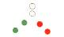 Кой кораб носи тези светлини? |
Кораб, по-къс от 50м.тласка друг кораб, движи се на дясно. | Кораб, буксиращ друг кораб на борд, идва срещу нас. | Кораб, по-къс от 50м.тласка друг кораб, движи се срещу нас. | Кораб, тласкан напред | |
| 109 | 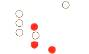 Кой кораб носи тези светлини? |
Koраб, по-дълъг от 50м., буксира друг кораб и е ограничен във възможността си да маневрира, влекалото е по-дълго от 200м. | Кораб, по-къс от 50м.,влачи кораб и е ограничен във възможността си да маневрира. | Влачещ кораб, дължината на влекалото е по-голяма от 200м, влачи кораб ограничен от своето | Влачещ кораб, дължината на влекалото е по-голяма от 200м, влачи кораб без управлеание. | |
| 110 | 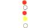 Кой кораб носи тези светлини? |
Риболовен кораб, вижда се кърмовата му част. | Пилотски кораб, вижда се кърмовата му част. | Кораб, зает с влачене и е ограничен в способността си да маневрира | Кораб, ограничен от своето газене. | |
| 111 | Кой кораб носи тези светлини? | Влачен незабелижим или частично потопен обект, по-къс от 100м.и ширина, по-малка от25м.. | Влачен незабелижим или частично потопен обект, по-къс от 100м.и ширина, по-голяма от25м. | Влачен незабелижим или частично потопен обект, по-дълъг от 100м.и ширина, по-малка от25м. | Влачен незабелижим или частично потопен обект, по-дълъг от 100м.и ширина, по-голяма от25м. | |
| 112 | Кой кораб носи тези светлини? | Ветроходен кораб на ход, движи се срещу нас | Риболовен кораб. | Кораб, зает с риболов и не трали. | Кораб без управление. | |
| 113 | 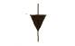 Кой кораб носи този знак през деня? |
Ветроходен кораб под ветрила, на който работи и механичния двигател. | Кораб, зает с тралене. | Влачен полупотънал, или частично потопен обект. | Кораб, ограничен от своето газене. | |
| 114 | 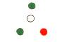 Кой кораб носи тези светлини? |
Кораб, зает с риболов, с изключение на корабите, заети с тралене. | Риболовен траулер, вдига мрежите си. | Риболовен траулер, по-къс от 50м., движи се срещу нас. | Кораб, без управление. | |
| 115 | Кой кораб носи този знак през деня? | Влачен полупотънал, или частично потопен обект, влекалото е по-дълго от 200м. | Кораб, движи се едновременно с платна и мех. двигател. | Кораб, без управление. | Кораб, зает с риболов. | |
| 116 | 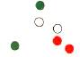 Кой кораб носи тези светлини? |
Риболовен траулер, по-къс от 50м., спуска трала си, движи се срещу нас. | Кораб, зает с риболов, с изключение на корабите, заети с тралене. | Риболовен траулер, по-къс от 50м., обира трала си, движи се срещу нас | Риболовен траулер, по-къс от 50м., закачил трала си. | |
| 117 | 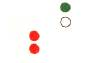 Кой кораб носи тези светлини? |
Риболовен траулер,закачил трала си, няма ход относно водата. | Риболовен траулер, по-къс от 50м., обира трала си. | Риболовен траулер, по-къс от 50м., спуска трала си. | Кораб, зает с риболов, с изключение на корабите, заети с тралене. | |
| 118 | 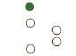 Кой кораб носи тези светлини? |
Кораб, зает с риболов, с изключение на корабите, заети с тралене. | Риболовен траулер, закачил трала си. | Риболовен траулер, обира трала си. | Риболовен траулер, спуска трала си, виждаме кърмата му. | |
| 119 | 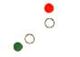 Кой кораб носи тези светлини? |
Риболовен траулер, по-къс от 50м., обира трала си. | Риболовен траулер, по-къс от 50м., спуска трала си. | Риболовен кораб, който не е траулер, мрежите му са над 150м.от него. | Риболовен траулер, спуска трала си, виждаме кърмата му. | |
| 120 | 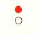 Кой кораб носи тези светлини? |
Риболовен кораб, който не е траулер, няма ход относно водата или риболува на котва. | Риболовен траулер, спуска трала си, виждаме кърмата му. | Ветроходен кораб на ход, виждаме кърмата му. | Кораб без управление. | |
| 121 | 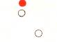 Кой кораб носи тези светлини? |
Риболовен кораб, който не е траулер, няма ход относно водата,мрежите му са над 150м.от него. | Ветроходен кораб на ход, виждаме кърмата му. | Кораб без управление | Риболовен траулер, спуска трала си, виждаме кърмата му. | |
| 122 | 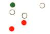 Кой кораб носи тези светлини? |
Риболовен траулер, по-къс от 50м., спуска трала си. | Риболовен траулер, спуска трала си, виждаме кърмата му. | Риболовен траулер, по-къс от 50м., обира трала си, движи се на ляво. | Риболовен траулер, по-дълъг от 50м., обира трала си, движи се на ляво. | |
| 123 | 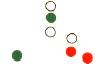
|
Риболовен траулер, по-дълъг от 50м., обира трала си, движи се срещу нас. | Риболовен траулер, по-дълъг от 50м., спуска трала си, движи се на ляво. | Риболовен траулер, по-къс от 50м., обира трала си, движи се на ляво. | Риболовен траулер, по-дълъг от 50м., обира трала си, движи се на дясно. | |
| 124 | 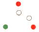
Кой кораб носи тези светлини? |
Риболовен кораб, който не е траулер, мрежите му са над 150м.от него, движи се срещу нас. | Риболовен траулер, по-къс от 50м., обира трала си, движи се на ляво. | Риболовен кораб, който не е траулер, мрежите му са над 150м.от него, движи се на ляво. | Риболовен кораб, който не е траулер, мрежите му са над 150м.от него, движи се на дясно. | |
| 125 | 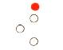 Кой кораб носи тези светлини? |
Риболовен кораб, който не е траулер, мрежите му са над 150м.от него, движи се срещу нас. | Риболовен траулер, по-къс от 50м., обира трала си, движи се на ляво. | Риболовен кораб, който не е траулер, мрежите му са над 150м.от левия му борд, виждаме кърмата. | Риболовен кораб, който не е траулер, мрежите му са над 150м.от него, движи се на дясно. | |
| 126 | 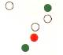
Кой кораб носи тези светлини? |
Риболовен траулер, по-къс от 50м., обира трала си, движи се на дясно. | Риболовен траулер, по-дълъг от 50м., обира трала си, движи се на дясно. | Риболовен траулер, по-къс от 50м., обира трала си, движи се на ляво. | Риболовен траулер, по-дълъг от 50м., спуска трала си, движи се на дясно. | |
| 127 | 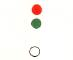 Кой кораб носи тези светлини? |
Кораб без управление, вижда се кърмовата му част. | Пилотски кораб, вижда се кърмовата му част. | Ветроходен кораб, вижда се кърмовата му част. | Риболовен кораб, виждаме кърмата. | |
| 128 | 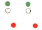 Виждате следните светлини: |
Риболовни кораби по къси от 50м., тралят с близначен трал, движат се на ляво. | Риболовни кораби по къси от 50м., тралят с близначен трал, движат се на дясно. | Риболовни кораби по дълги от 50м., тралят с близначен трал, движат се на ляво. | Риболовни кораби по дълги от 50м., тралят с близначен трал, движат се на дясно. | |
| 129 | 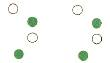 Виждате следните светлини: |
Риболовни кораби по-къси от 50м., тралят с близначен трал, движат се на ляво. | Риболовни кораби по-къси от 50м., тралят с близначен трал, движат се на дясно. | Риболовни кораби по-дълги от 50м., тралят с близначен трал, движат се на ляво. | Риболовни кораби по-дълги от 50м., тралят с близначен трал, движат се на дясно. | |
| 130 | Кой кораб носи тези светлини? | Кораб, ограничен в способността си да маневрира. | Кораб без управление, няма ход относно водата. | Риболовен кораб, който не трали. | Ветроходен кораб. | |
| 131 | 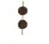 Кой кораб носи този знак през деня? |
Кораб, ограничен в способността си да маневрира. | Кораб без управление. | Риболовен кораб, който не трали. | Ветроходен кораб. | |
| 132 | Кой кораб носи тези светлини? | Кораб, ограничен в способността си да маневрира, движи се на ляво. | Кораб без управление, движи се на ляво. | Риболовен кораб, който не трали, движи се на ляво. | Ветроходен кораб, движи се на ляво. | |
| 133 | 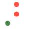 Кой кораб носи тези светлини? |
Кораб, ограничен в способността си да маневрира, движи се на дясно. | Ветроходен кораб, движи се на дясно. | Кораб без управление, движи се на дясно. | Риболовен кораб, който не трали, движи се на дясно | |
| 134 | 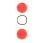 Кой кораб носи тези светлини?
| Кораб, ограничен в способността си да маневрира, няма ход относно водата. | Кораб без управление, движи се на дясно. | Риболовен кораб, който не трали, движи се на дясно. | Ветроходен кораб, движи се на ляво. | |
| 135 | 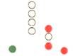 Кой кораб носи тези светлини? |
Кораб по-дълъг от 50м., без управление, движи се срещу нас. | Кораб, ограничен в способността си да маневрира, извършва буксировка. | Риболовен кораб, който не трали, движи се срещу нас. | Ветроходен кораб, движи се срещу нас. | |
| 136 | 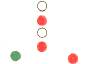 Кой кораб носи тези светлини? |
Кораб, ограничен в способността си да маневрира, извършва буксировка. | Кораб по-дълъг от 50м., без управление, движи се срещу нас. | Кораб, ограничен в способността си да маневрира, по къс от 50м. | Ветроходен кораб, движи се срещу нас. | |
| 137 | 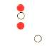 Кой кораб носи тези светлини? |
Кораб, ограничен в способността си да маневрира, вижда се кърмата му. | Кораб по-дълъг от 50м., без управление, вижда се кърмата му. | Кораб, ограничен в способността си да маневрира, извършва буксировка. | Риболовен кораб, който не трали, вижда се кърмата му. | |
| 138 | 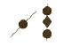 Кой кораб носи тeзи знаци? |
Кораб, ограничен от своето газене, на котва. | Кораб без управление, на котва. | Риболовен кораб, който не трали, на котва. | Кораб, ограничен в способността си да маневрира, на котва. | |
| 139 | 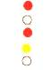 Кой кораб носи тези светлини? |
Кораб, ограничен в способността си да маневрира, няма ход относно водата. | Кораб по-дълъг от 50м., без управление, вижда се кърмата му. | Кораб, зает с буксировка и е ограничен във възможността си да маневрира. | Риболовен кораб, който не трали, вижда се кърмата му | |
| 140 | 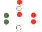 Кой кораб носи тези светлини? |
Кораб, зает с драгажни дейности на ход, свободен за преминаване е левия му борд. | Кораб без управление, свободен за преминаване е левия му борд. | Кораб, зает с драгажни дейности на котва. | Риболовен кораб, мрежите са от десния му борд. | |
| 141 | 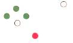 Кой кораб носи тези светлини? |
Кораб, зает с тралене на мини с дължина под 50м, движи се на дясно. | Кораб, зает с тралене на мини с дължина под 50м, движи се на ляво. | Кораб, зает с тралене на мини с дължина над 50м, движи се на ляво | Кораб, зает с тралене на мини с дължина над 50м, движи се на дясно. | |
| 142 | 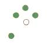 Кой кораб носи тези светлини? |
Кораб, зает с тралене на мини с дължина под 50м, движи се на дясно. | Кораб, зает с тралене на мини с дължина над 50м, движи се на ляво. | Кораб, зает с тралене на мини с дължина над 50м, движи се на дясно. | Кораб, зает с тралене на мини с дължина под 50м, движи се на ляво. | |
| 143 | 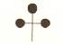 Кой кораб носи тeзи знаци? |
Кораб, ограничен в способността си да маневрира. | Кораб, зает с миночистачни дейности | Кораб без управление. | Риболовен кораб. | |
| 144 | Виждате светлините и знаците на кораб, зает с миночистачни деиности. Какво означават? | Опасно е приближаването на друг кораб на разстояние, по-малко от 1000м. | Опасно е изпреварването на виждания кораб от десния му борд. | Опасно е изпреварването на виждания кораб от левия му борд. | Опасно е приближаването на друг кораб на разстояние, по-малко от 500м.. | |
| 145 | 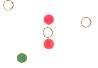 Кой кораб носи тези светлини? |
Кораб, ограничен в способността си да маневрира, няма ход относно водата. | Кораб, зает с буксировка и е ограничен във възможността си да маневрира. | Кораб, ограничен в способността си да маневрира, вижда се десния борд. | Кораб, ограничен в способността си да маневрира, вижда се левия. | |
| 146 | Кой кораб носи тези светлини? | Кораб, ограничен в способността си да маневрира, на котва. | Кораб без управление, вижда се кърмовата му част. | Риболовен кораб, няма движение относно водата. | Пилотски кораб, вижда се кърмовата му част. | |
| 147 | Кой кораб носи тeзи знаци? | Кораб, зает с буксировка и е ограничен във възможността си да маневрира. | Кораб ограничен в способността си да маневрира | Кораб без управление. | Кораб, ограничен в способността си да маневрира, на котва. | |
| 148 | 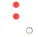
Кой кораб носи тези светлини? |
Пилотски кораб, вижда се кърмовата му част. | Кораб без управление, няма ход относно водата. | Риболовен кораб, няма движение относно водата. | Кораб без управление, на ход, виждаме кърмата му. | |
| 149 | 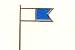 Кой кораб носи този флаг през деня? |
Пилотски кораб. | Кораб без управление | Риболовен кораб. | Кораб, зает с водолазна деиност. | |
| 150 | 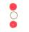 Кой кораб носи тeзи светлини? |
Кораб, зает с водолазна дейност. | Пилотски кораб. | Риболовен кораб. | Кораб без управление. | |
| 151 | 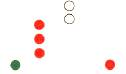 Кой кораб носи тeзи светлини? |
Кораб, ограничен от своето газене, по-дълъг от 50м., идва срещу нас | Кораб, зает с водолазна дейност, по-дълъг от 50м. , идва срещу нас. | Кораб, зает с водолазна дейност, по-къс от 50м. , идва срещу нас. | Кораб без управление, идва срещу нас. | |
| 152 | 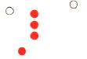 Кой кораб носи тeзи светлини? |
Кораб, ограничен от своето газене, по-дълъг от 50м., идва срещу нас. | Кораб, ограничен в способността си да маневрира, на котва. | Кораб, ограничен от своето газене, по-дълъг от 50м., движи се на ляво. | Кораб без управление, движи се на ляво. | |
| 153 | 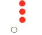 Кой кораб носи тeзи светлини? |
Кораб, ограничен в способността си да маневрира, на котва. | Кораб, ограничен от своето газене, виждаме кърмата. | Кораб без управление, на котва. | Кораб без управление, вижда се кърмата. | |
| 154 | 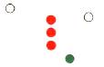 Кой кораб носи тeзи светлини? |
Кораб, ограничен от своето газене, по-дълъг от 50м., движи се на ляво. | Кораб без управление, движи се на дясно. | Кораб, ограничен от своето газене, по-къс от 50м., движи се на дясно. | Кораб, ограничен от своето газене, по-дълъг от 50м., движи се на дясно. | |
| 155 | 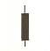 Кой кораб носи този знак през деня? |
Кораб, ограничен в способността си да маневрира. | Кораб без управление. | Риболовен кораб. | Кораб, ограничен от своето газене. | |
| 156 | 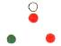 Кой кораб носи тези светлини? |
Пилотски кораб на ход, движи се срещу нас | Ветроходен кораб, движи се срещу нас. | Кораб без управление, движи се срещу нас. | Риболовен кораб, движи се срещу нас. | |
| 157 | 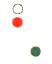 Кой кораб носи тези светлини? |
Ветроходен кораб, движи се на дясно. | Пилотски кораб на ход, движи се на дясно | Пилотски кораб на ход, движи се на ляво. | Риболовен кораб, движи се на дясно. | |
| 158 | 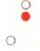 Кой кораб носи тези светлини? |
Ветроходен кораб, вижда се кърмата. | Пилотски кораб на ход, вижда се кърмата. | Заседнал кораб. | Риболовен кораб,вижда се кърмата. | |
| 159 | Кой кораб носи тези светлини? | Ветроходен кораб, на ход. | Риболовен кораб, движи се на ляво. | Пилотски кораб на ход, движи се на ляво. | Заседнал кораб. | |
| 160 | Кой кораб носи тези светлини? | Пилотски кораб на котва, по-дълъг от 50м., изпълнява задълженията си. | Ветроходен кораб, на ход. | Риболовен кораб, на котва. | Заседнал кораб на котва. | |
| 161 | Кой кораб носи тези светлини? | Ветроходен кораб, няма ход относно водата. | Кораб без управление, движи се на заден ход. | Риболовен кораб, мрежите са пуснати, от л/б. | Пилотски кораб на въздушна възглавница. | |
| 162 | Кой кораб носи тези светлини? | Кораб, по-дълъг от 50 м., на котва. | Кораб без управление. | Пилотски кораб. | Риболовен кораб. | |
| 163 | Кой кораб носи тази светлина? | Пилотски кораб, изпълнява задълженията си. | Кораб без управление, на ход. | Кораб, по-къс от 50м, на котва. | Риболовен кораб, тралира. | |
| 164 | Кой кораб носи тези светлини? | Заседнал кораб с дължина по-голяма от 50м. | Заседнал кораб с дължина по-малка от 50м. | Пилотски кораб. | Риболовен кораб, трали. | |
| 165 | Кой кораб носи тези знаци през деня? | Кораб без управление. | Риболовен кораб. | Пилотски кораб. | Заседнал кораб. | |
| 166 | Кораб, с дължина по-малка от 7м., длъжен ли е да показва светлините и знаците за "Кораби на котва" | Длъжен е при всички обстоятелства. | Не е длъжен. | Длъжен е, когато е в райони, където обикновено плават други кораби. | Не е длъжен, когато няма котва. | |
| 167 | Кораб, с дължина по-малка от 12 м., длъжен ли е да показва светлините и знаците за "Заседнали кораби" | Длъжен е, когато е заседнал в теснина или фарватер. | Длъжен е, когато е в котвена стоянка, или близо до нея. | Длъжен е при всички обстоятелства. | Не е длъжен. | |
| 168 | Какви звукосигнални средства трябва да има кораб с дължина над 12м., но по-къс от 100м.? | Свирка и камбана. | Свирка, камбана и гонг. | Свирка. | Камбана. | |
| 169 | Чувате един къс звук или виждате един къс проблясък: | "Имам намерение да ви изпреваря от левия борд" | "Имам намерение да ви изреваря от десния борд. | "Изменям своя курс на ляво" | "Изменям своя курс на дясно". | |
| 170 | Чувате два къси звука или виждате два къси проблясъка: | "Имам намерение да ви изпреваря от левия борд" | "Имам намерение да ви изреваря от десния борд. | "Изменям своя курс на ляво" | "Изменям своя курс на дясно" | |
| 171 | Чувате три къси звука или виждате три къси проблясъка: | "Двигателите ми работят на заден ход" | "Нямам ход относно водата" | "Изменям своя курс на дясно" | "Изменям своя курс на ляво" | |
| 172 | Намирате се в теснина или фарватер и чувате два продължителни и един къс звук: | "Имам намерение да ви изпреваря от левия борд" | "Имам намерение да ви изпреваря от десния борд". | "Изменям своя курс на дясно" | "Изменям своя курс на ляво" | |
| 173 | Намирате се в теснина или фарватер и чувате един продължителен, един къс, един продължителен и един звук: | "Съгласен съм да бъда изпреварен". |
"Изменям своя курс на дясно" | "Нямам ход относно водата" | "Изменям своя курс на ляво" | |
| 174 | Корабите са във видимост и се сближават, чувате най малко пет къси сигнала: | "Не разбирам вашите дейст-вия, взетите от вас мерки за избягване на сблъскване не са достатъчни". | Сигнал за бетствие. | "Нямам ход относно водата". | "Нямам управление". | |
| 175 | В теснина или фарватер подавате един продължителен звук Какво означава? | "Буксирам друг кораб." | "Изменям своя курс на дясно" | "Може да не виждам друг кораб поради завой или препятствие." | "Нямам ход относно водата" | |
| 176 | При ограничена видимост чувате един продължителен звук през интервал около 2 минути. | Кораб с мех. двигател, движи се относно водата. | Кораб, без управление. | Влачен кораб. | Кораб, ограничен в способността си да маневрира. | |
| 177 | При ограничена видимост чувате два продължителени звука през интервал около 2 минути.
|
Кораб с мех. двигател, движи се относно водата. | Кораб, без управление. | Кораб с мех. двигател, няма ход относно водата. | Кораб, ограничен в способността си да маневрира. | |
| 178 | При ограничена видимост чувате един продължителен и два къси звука през интервал около 2 минути. | Кораб с мех. двигател, движи се относно водата. | Влачен кораб. | Кораб, ограничен в способността си да маневрира. | Кораб с мех. двигател, няма ход относно водата. | |
| 179 | При ограничена видимост чувате един продължителен и два къси звука през интервал около 2 минути. | Кораб с мех. двигател, движи се относно водата. | Влачен кораб | Кораб с мех. двигател, няма ход относно водата. | Кораб, без управление. | |
| 180 | При ограничена видимост чувате един продължителен и два къси звука през интервал около 2 минути. | Кораб, ограничен от своето газене | Кораб с мех. двигател, движи се относно водата. | Влачен кораб | Кораб с мех. двигател, няма ход относно водата. | |
| 181 | При ограничена видимост чувате един продължителен и два къси звука през интервал около 2 минути. | Кораб с мех. двигател, движи се относно водата. | Ветроходен кораб. | Кораб с мех. двигател, няма ход относно водата. | Влачен кораб | |
| 182 | При ограничена видимост чувате един продължителен и два къси звука през интервал около 2 минути. | Кораб с мех. двигател, движи се относно водата. | Кораб с мех. двигател, няма ход относно водата. | Кораб, зает с риболов | Влачен кораб. | |
| 183 | При ограничена видимост чувате един продължителен и два къси звука през интервал около 2 минути. | Кораб, който влачи или тласка друг кораб | Влачен кораб | Кораб с мех. двигател, движи се относно водата. | Кораб с мех. двигател, няма ход относно водата. | |
| 184 | При ограничена видимост чувате един продължителен и три къси звука през интервал около 2 минути. | Заседнал кораб. | Влачен кораб, или последния от тях, ако има екипаж. | Кораб с мех. двигател, движи се относно водата. | Кораб с мех. двигател, няма ход относно водата. | |
| 185 | При ограничена видимост чувате чести удари с камбана последвани от един къс, един дълъг и един къс сигнала със свирка: | Влачен кораб, или последния от тях, ако има екипаж. | Кораб, зает с риболов. | Заседнал кораб. | Кораб на котва. | |
| 186 | Какво означава звуковия сигнал подаван през 2мин. в ораничена видимост? | Кораб, ограничен в способността си да маневрира, изпълнява дейността си на котва. | Кораб, изпълняващ пилотски задължениа на ход. | Заседнал кораб | Кораб с мех. двигател, няма ход относно водата. | |
| 187 | Какво означава звуковия сигнал подаван през 2мин. в ограничена видимост? | Кораб с мех. двигател, няма ход относно водата. | Кораб с мех. двигател, движи се относно водата. | Кораб, зает с риболов, когато е на котва | Кораб, изпълняващ пилотски задължениа на ход. | |
| 188 | Кораб с дължина, по-малка от 12м. длъжен ли е да подава сигналите на "Правилата" за ограничена видимост? | Не е длъжен, но трябва да подава друг ефективен сигнал през по-малко от 2мин. | Длъжен е, когато е в котвена стоянка, или близо до нея. | Длъжен е, при всички обстоятелства. | Длъжен е, когато няма управление. | |
| 189 | Когато корабът има две топови светлини, хоризонталното разстояние между тях трябва да бъде: | Не по-малко 20м. | Не по-малко от 30м. | Не по-малко от 40м. | Не по-малко от половината от дължината на кораба. | |
| 190 | Какъв трябва да бъде цветът на щитовите за бордовите светлини? | От десния борд-зелен. | От левия борд-червен. | Матово-черно. | Бял. | |
| 191 | Какъв трябва да бъде цветът на знаците? | Зелен. | Черен. | Червен. | Бял. | |
| 192 | Чувате експлозивни сигнали през интервал от около 1мин. Какво означава това? | Кораб е загубил управление. | Кораб поставя кабели. | Танкер е направил разлив. | Кораб търпи бедствие и се нуждае от помощ. | |
| 193 | Чувате непрекъснат звуков сигнал, подаван от апарат за мъгла. Какво означава това? | Кораб търпи бедствие и се нуждае от помощ. | Сигнал за обръщане на внимание. | Военен кораб извършва маневра. | Кораб е загубил управление. | |
| 194 | Виждате червени звездни ракети през кратки интервали от време. Какво означава това? | Сигнал за обръщане на внимание. | Кораб обслужва водолази. | Кораб е загубил управление | Кораб търпи бедствие и се нуждае от помощ. | |
| 195 | Чувате по радиотелеграфа или друга сигнална система (SOS) по Морзовата азбука: | Кораб търпи бедствие и се нуждае от помощ. | Кораб обслужва водолази. | Кораб е загубил управление | Сигнал за обръщане на внимание. | |
| 196 | Чувате по радиотелефона думата "Мейдей": | Кораб обслужва водолази. | Кораб търпи бедствие и се нуждае от помощ. | Нужен ми е буксир. | Кораб е загубил управление | |
| 197 | По Международния код за сигналите виждате флаговете NC (Новембер-Чарли): | Кораб е загубил управление. | Кораб обслужва водолази. | Кораб търпи бедствие и се нуждае от помощ. | Нужен ми е буксир. | |
| 198 | Виждате квадратен флаг с поставена над или под него сфера или предмет, подобен на сфера: | Кораб обслужва водолази. | Корабът ми е под карантина. | Нужен ми е буксир. | Кораб търпи бедствие и се нуждае от помощ. | |
| 199 | По Международния код за сигналите виждате флаговете NC (Новембер-Чарли) | Кораб обслужва водолази. | Кораб, поставящ кабели. | Кораб търпи бедствие и се нуждае от помощ. | Нужен ми е буксир. | |
| 200 | Виждате излизащи от някакви съдове пламъци на палубата от друг кораб: | Кораб обслужва водолази. | Кораб, поставящ кабели. | Кораб търпи бедствие и се нуждае от помощ. | Нужен ми е буксир. | |
| 201 | Виждате червена парашутна ракета или фалшвеер: | Кораб обслужва водолази. | Нужен ми е буксир. | Кораб, поставящ кабели. | Кораб търпи бедствие и се нуждае от помощ. | |
| 202 | Виждате димен сигнал с оранжев цвят: | Нужен ми е буксир. | Кораб търпи бедствие и се нуждае от помощ. | Кораб, поставящ кабели. | Кораб обслужва водолази. | |
| 203 | Виждате бавно и повтарящо се вдигане и спускане на ръце, протегнати встрани: | Кораб обслужва водолази. | Кораб, поставящ кабели. | Кораб търпи бедствие и се нуждае от помощ. | Нужен ми е буксир. | |
| 204 | Разрешава ли се сигналите за бедствие да се използват за други цели? | Разрешава се, когато корабите са във видимост един с друг. | Разрешава се, при ограничена видимост. | Разрешава се. | Забранява се. | |
| 205 | Допуска ли се използването на сигнали, които могат да се приемат погрешно като сигнали за бедствие? | Допуска се, ако кораба извършва водолазна дейност. | Допуска се, когато кораба е загубил управление. | Допуска се, когато кораба е влачен. | Не се допуска. | |
| 206 | За разпознаване от въздуха виждате оранжево платнище с вписани черен квадрат и кръг. | Кораб търпи бедствие и се нуждае от помощ. | Кораб, поставящ кабели. | Нужен ми е буксир. | Кораб обслужва водолази. | |
| 207 | Виждате цветно петно на повърхността на водата: | Кораб, поставящ кабели. | Кораб търпи бедствие и се нуждае от помощ. | Кораб обслужва водолази. | Нужен ми е буксир. | |
| Морско дело | МППСМ 72 | Навигация | Нормативна уредба | Техническа подготовка |
Подготвил
к.д.п.Костадинов
41 стр = 285 въпроса
Не съществуват въпросите : 6,33,58,68,94,117,136,154,159,177,199,203,220,247,271.